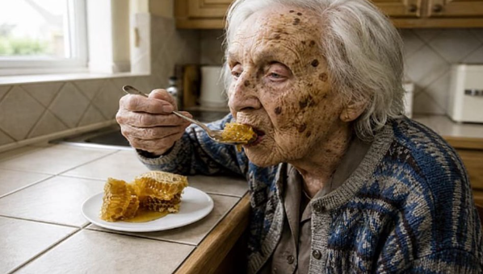

Neurochirurgo: Hai paura dell’Alzheimer? (Fai questo prima di dormire)

Ogni mattina ti svegli e il primo pensiero è: cosa ho dimenticato oggi? I nomi che non ti vengono. Le parole che scompaiono a metà frase. Le chiavi che sono sempre da qualche altra parte. E quella paura silenziosa e soffocante — non della morte, ma del giorno in cui non riconoscerai più i tuoi figli.
Per anni ti hanno detto che è una parte naturale dell’invecchiamento. Che devi accettarlo. Che non c’è niente da fare. Ma e se si fossero sbagliati tutti — compreso il tuo medico?
La scoperta che hanno cercato di cancellare
Quando questo neurochirurgo ha condiviso la sua scoperta con il pubblico, la reazione è stata immediata. I suoi video venivano rimossi. Gli account cancellati. Sono stati contattati dagli avvocati. Le grandi aziende farmaceutiche hanno fatto di tutto affinché questa informazione non si diffondesse.
Perché tanto panico? Perché se le persone conoscessero la verità, nessuno comprerebbe più quei costosi farmaci che curano solo i sintomi — mai la causa. Una soluzione naturale, che non può essere brevettata, toglierebbe miliardi all’industria farmaceutica.
 ▶ GUARDA IL VIDEO ORA
▶ GUARDA IL VIDEO ORA
Accesso gratuito · Disponibile per un tempo limitato
Cosa contiene esattamente il video?
Prima di essere definitivamente messo a tacere, il neurochirurgo ha registrato un video dettagliato. In esso spiega la vera causa del declino cognitivo — che è scioccantemente diversa da quello che pensavi — e il semplice rituale serale che devi fare ogni giorno affinché il cervello mantenga la sua piena capacità. Un ingrediente naturale usato da secoli in un luogo dove l’Alzheimer è quasi sconosciuto.
Accesso gratuito · Disponibile per un tempo limitato